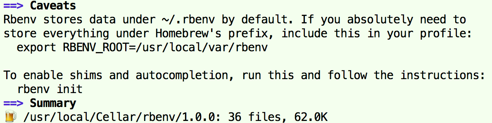

一、安装
- Ruby安装方式有多种方式，可以通Ruby安装包、Homebrew、rbenv或RVM等；
rbenv和RVM都可进行Ruby多版本管理，等同于Node.js中的nvm、Python中的pyenv；这里使用rbenv进行安装（rbenv的GitHub Star比RVM的多）；
第1步：安装rbenv
brew install rbenv
第2步：安装某个版本的Ruby；
rbenv install <VERSION>
二、rbenv
rbenv的原理及使用和Python中的pyenv几乎是一样的；
rbenv version # 查看当前Ruby版本（以ruby --version为准） rbenv versions # 查看已安装的Ruby版本（system为系统默认安装的） rbenv install -l # 查看可以安装的Ruby版本 rbenv uninstall <VERSION> # 安装某个版本的Ruby rbenv rehash # 刷新shims（有时install或切换版本后需要执行一下） rbenv uninstall <VERSION> # 卸载某个版本的Ruby rbenv global [VERSION] # 查看或设置全局的Ruby版本 rbenv local [VERSION] # 查看或设置目录的Ruby版本 rbenv shell [VERSION] # 查看或设置当Shell的Ruby版本 rbenv <local | shell> --unset # 取消某个级别设置的Ruby版本
三、gem模块
gem（RubyGems）是Ruby的包管理工具（其也是一个包），类似于Node.js的npm、Python的pip；
gem -v # 查看gem版本 gem environment # 查看gem的环境信息 gem help [COMMAND] # 查看相关帮助 gem list # 查看已安装的包 gem outdated # 查看需要更新的包 gem search <PACKAGE> # 查找包，如gem search rails gem install <PACKAGE> [-v <VERSION>] # 安装包，例如gem install rails -v 4.0 gem uninstall <PACKAGE> # 卸载包（不会卸载其依赖包） gem update --system # 更新RubyGems（gem） gem update [<PACKAGE>] # 更新所有、某个包（会保留老版本的包） gem cleanup # 清除所有包的旧版本，保留最新版本 gem dependency <PACKAGE> # 查看已安装包的依赖包# Gem的安装源配置在~/.gemrc文件中，所有版本的Ruby/Gem共用 gem sources -l # 查看gem的安装源 gem sources -a <URL> # 增加一个gem的安装源 gem sources -r <URL> # 删除某个gem的安装源 gem sources -c # 删除所有gem的安装源
四、gemset模块
- gemset可以为不同项目设置独立的虚拟的gem环境，其等同于Python中的virtualenv；